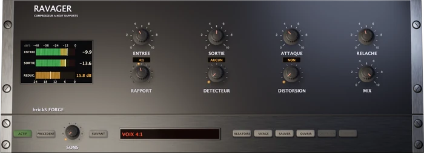
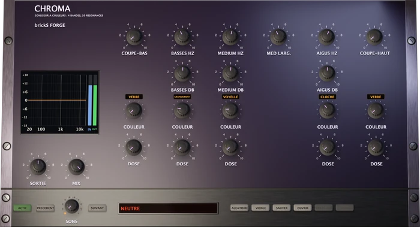
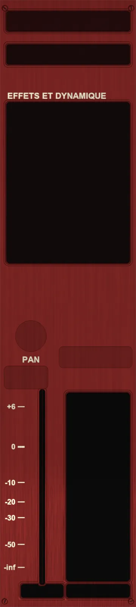
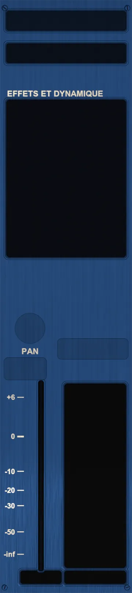

Forge Studio
Un studio qui tient dans une application. Juste ce qu’il faut pour travailler sans se rendre fou : on ne passe pas son temps à configurer, on fait de la musique.













Ce qu’il fait
Six choses, bien faites.
Forge Studio ne cherche pas à tout faire. Il fait ce qu’il faut pour sortir un morceau, et rien qui vous en détourne.
Une table de mixage, pas une grille
La vue principale est une vraie table de mixage : une tranche par piste, des groupes, des retours d'effets, un master. Faders, pan, mute, solo, vumètres précis. Un bouton mono pour vérifier la compatibilité du mix.
Un séquenceur par piste
Un clic sur SEQ ouvre le séquenceur de la piste : briques de notes, piano roll, hauteur par note, effets MIDI, automation. Une boîte à rythmes donne une ligne par pad.
Tout Forge à portée de main
Les plug-ins Forge sont dans l'application : on choisit un synthé, un effet ou un compresseur dans l'accueil, un appui le pose sur la piste. Pas de scan, pas de fenêtre de plug-ins à ouvrir.
Jouer et enregistrer
Armez une piste, jouez au clavier de l'ordinateur ou au clavier MIDI, appuyez sur REC. Horloge commune : les boîtes à rythmes suivent lecture, arrêt et tempo du projet.
Un navigateur de sons
Une banque de sons classés par type (basses, leads, nappes, claviers, effets) et une balade libre dans vos dossiers. Glissez un son sur une piste pour le charger.
Projets et export
Un projet = un fichier, enregistré avec Cmd+S. L'export donne le mixage complet en WAV 24 bits, queues d'effets comprises.
Dedans, tout Forge
La gamme Forge, embarquée en natif.
Pas de gestionnaire de plug-ins à ouvrir : les instruments et les effets Forge sont déjà dans l’application. Vous les retrouvez aussi en plug-ins AU et VST3 dans votre logiciel de musique habituel.
Prévu pour la sortie : l'accueil de vos propres plug-ins AU et VST3, à côté de la gamme Forge.


Une question de rythme
Pas d’usine à gaz.
Pas de cent menus, pas de réglages qui se cachent. La vue principale est la table de mixage : un clic sur une tranche, et vous ouvrez le plug-in ou le séquenceur de la piste.
- Une seule vue principale : la table de mixage
- Un séquenceur par piste, ouvert d’un clic
- Un plug-in posé en un appui depuis l’accueil
- Un export WAV 24 bits du mixage complet
Soyez prévenu le jour de la sortie.
Laissez votre adresse e-mail. Vous recevrez un seul message, quand Forge Studio sera prêt à être téléchargé. Aucune date n’est promise tant que ce n’est pas prêt.
Un seul e-mail, le jour de la sortie. Pas de newsletter, adresse jamais partagée. Confidentialité